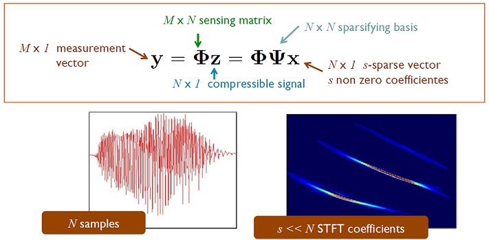

|
Dr. Zhen Gao (
高 镇
)
|
Latest News
- [2021.07] Dr. Gao was invited as the Associate Editor of IEEE Communications Letters ( 高镇入选重要期刊IEEE Communications Letters编委 )
- [2021.07] Yang Wang and Minghui Wu were respectively awarded Second and Third Prizes of Wireless Big Data Competition ( 王洋 吴铭晖 获得第二届无线大数据竞赛-AI无线网络信道重构二等奖、三等奖 )
- [2021.07] Paper of Li Qiao was accepted by IEEE Transactions on Wireless Communications( 乔力 论文被TWC(IF=7.016)期刊录用 )【物联网海量机器类通信】
- [2021.06] Paper of Malong Ke was accepted by IEEE Wireless Communications Magazine( 柯玛龙 论文被WCM(IF=11.391)期刊录用 )【空基海量物联网接入】
- [2021.05] Paper of Shicong Liu was accepted by IEEE Communications Magazine( 刘仕聪 论文被COMMAG(IF=11.052)期刊录用 )【LEO卫星与B5G垂直应用】
- [2021.04] Paper of Xisuo Ma was accepted by IEEE Journal on Selected Areas in Communications( 马西锁 论文被JSAC(IF=11.42)期刊录用 )【模型驱动深度学习的MIMO传输】
- [2021.03] Paper of Anwen Liao was accepted by IEEE Journal on Selected Areas in Communications( 廖安文 论文被JSAC(IF=11.42)期刊录用 )
- [2021.02] Paper of Ziwei Wan was accepted by IEEE Transactions of Communications( 万子维 论文被TCOM(IF=5.646)期刊录用 )
- [2020.12] Minghui Wu was awarded Second Prize of National Competition of AI ( 吴铭晖 获得全国人工智能大赛二等奖 )
Research Interest
Zhen Gao (Member, IEEE) received the B.S. degree in information engineering from the Beijing Institute of Technology, Beijing, China, in July 2011, and the Ph.D. degree in communication and signal processing from the Tsinghua National Laboratory for Information Science and Technology, Department of Electronic Engineering, Tsinghua University, China, in July 2016.,From 2014 to 2015, he visited the Communications and Signal Processing Group, Imperial College London, U.K., for nearly one year. He is currently an Assistant Professor with the Advanced Research Institute of Multidisciplinary Science (ARIMS) and the School of Information and Electronics, Beijing Institute of Technology, Beijing, China. His research interests are in wireless communications, with a focus on multicarrier modulations, multiple antenna systems, and sparse signal processing. He was a recipient of the IEEE Broadcast Technology Society, in 2016, the Scott Helt Memorial Award (Best Paper) and IET Electronics Letters Premium Award (Best Paper), in 2016, the Exemplary Reviewer of the IEEE Communications Letters, in 2016, the Academic Star of Tsinghua University, in 2016, and the Young Elite Scientists Sponsorship Program from the China Association for Science and Technology, from 2018 to 2021. He currently serves as an Associate Editor for IEEE Access.- Wireless Communications
- Channel Estimation of mmWave/THz Hybrid Massive MIMO To acquire the channel state information (CSI) of millimeter-wave (mmWave) or terahertz (THz) hybrid massive multiple-input-multiple-output (MIMO) systems, the reliable and efficient channel estimation methods with low training overhead and computational complexity are indispensable. The dominated research directions of hybrid massive MIMO channel estimation include 1) spectrum estimation theory based channel parameter estimation with the main channel parameters involving angle-of-arrivals/angle-of-departures (AoAs/AoDs), delays, Doppler shifts, and channel gains, etc; 2) compressed sensing (CS) theory based channel estimation, e.g., greedy algorithms, sparse bayesian learning (SBL), approximate message passing (AMP), etc; 3) machine learning theory based channel estimation, e.g., expectation-naximization (EM), deep learning neural networks, reinforcement learning, etc.
- Sparse Signal Processing Compressed sensing is a signal processing technique for efficiently acquiring and reconstructing a signal, by finding solutions to underdetermined linear systems. This is based on the principle that, through optimization, the sparsity of a signal can be exploited to recover it from far fewer samples than required by the Nyquist–Shannon sampling theorem. 
- Deep Learning based Solutions in Wireless Systems The reliable channel estimation for millimeter-wave massive hybrid MIMO systems is indispensable. Based on deep learning, the dominated research directions of channel estimation include 1) Data-driven deep learning . Inspired by the idea of autoencoder, we propose an end-to-end deep neural network architecture to jointly design the pilot signals and channel estimator. 2) Model-driven deep learning . By exploiting the angle-delay domain sparsity, we propose a multiple-measurement-vectors learned approximate message passing (MMV-LAMP) network with the devised redundant dictionary to jointly recover the channel on multiple subcarriers with significantly improved performance.
Publications
Book Chapters:
[1] Zhen Gao, Linglong Dai, Xinyu Gao, and Zhaocheng Wang, "Channel estimation in mmWave massive MIMO systems", Chapter 6 of book MmWave Massive MIMO: A paradigm for 5G, Elsevier Presss.
[2] Zhen Gao, Linglong Dai, Xinyu Gao, Muhammad Zeeshan Shakir, and Zhaocheng Wang, "Fronthaul design for mmWave massive MIMO HetNets", Chapter 12 of book MmWave Massive MIMO: A paradigm for 5G, Elsevier Press.
[3] Xinyu Gao, Linglong Dai, Zhen Gao, and Zhaocheng Wang, "Precoding for mmWave MIMO", Chapter 5 of book MmWave Massive MIMO: A paradigm for 5G, Elsevier Press.
[4] 杨昉, 刘思聪, 高镇. "5G 移动通信空口新技术", 电子工业出版社. [Buy]
Journals:
[34] Y. Wang, Z. Gao, J. Zhang, X. Cao, D. Zheng, Y. Gao, D. W. K. Ng, M. D. Renzo, "Trajectory Design for UAV-Based Internet-of-Things Data Collection: A Deep Reinforcement Learning Approach," in IEEE Internet of Things Journal (SCI Q1 Top, IF=9.417) [URL]
[33] S. Liu, Z. Gao, Y. Wu, D. W. K. Ng, X. Gao, K.-K Wong, S. Chatzinotas, B. Ottersten, "LEO Satellite Constellations for 5G and Beyond: How Will They Reshape Vertical Domains?," in IEEE Communications Magazine, vol. 59, no. 7, pp. 30-36, July 2021. (SCI Q1 Top, IF=9.619) [URL]
[32] L. Qiao, J. Zhang, Z. Gao, D. W. K. Ng, M. D. Renzo, M.-S Alouini, "Massive Access in Media Modulation Based Massive Machine-Type Communications," in IEEE Transactions on Wireless Communications. (Pre-Print) [URL]
[31] X. Ma, Z. Gao, F. Gao, M. D. Renzo, "Model-Driven Deep Learning Based Channel Estimation and Feedback for Millimeter-Wave Massive Hybrid MIMO Systems," in IEEE Journal on Selected Areas in Communications, vol. 39, no. 8, pp. 2388-2406, Aug. 2021. (SCI Q1 Top, IF=11.42) [URL]
[30] A. Liao, Z. Gao, D. Wang, H. Wang, H. Yin, D. W. K. Ng, M.-S. Alouini, "Terahertz Ultra-Massive MIMO-Based Aeronautical Communications in Space-Air-Ground Integrated Networks," in IEEE Journal on Selected Areas in Communications, vol. 39, no. 6, pp. 1741-1767, June 2021. (SCI Q1 Top, IF=11.42) [URL]
[29] Z. Wan, Z. Gao, F. Gao, M. D. Renzo, M.-S. Alouini, "Terahertz Massive MIMO with Holographic Reconfigurable Intelligent Surfaces," in IEEE Transactions on Communications, vol. 69, no. 7, pp. 4732-4750, July 2021. [URL] [Code]
[28] Y. Mei, Z. Gao, Y. Wu, W. Chen, D. W. K. Ng, M. Di Renzo, "Compressive Sensing Based Joint Activity and Data Detection for Grant-Free Massive Access," arXiv preprint arXiv:2011.07928 (2020). (Pre-Print) [URL]
[27] M. Ke, Z. Gao, Y. Wu, X. Gao and K. Wong, "Massive Access in Cell-Free Massive MIMO-Based Internet of Things: Cloud Computing and Edge Computing Paradigms," IEEE Journal on Selected Areas in Communications, vol. 39, no. 3, pp. 756-772, March 2021. (SCI Q1 Top, IF=11.42) [URL] [Arxiv] [Code]
[26] S. Liu, Z. Gao, J. Zhang, M. D. Renzo and M. -S. Alouini, "Deep Denoising Neural Network Assisted Compressive Channel Estimation for mmWave Intelligent Reflecting Surfaces," IEEE Transactions on Vehicular Technology, vol. 69, no. 8, pp. 9223-9228, Aug. 2020. (SCI Q2, IF=5.379) [URL] [Code]
[25] L. Qiao, J. Zhang, Z. Gao, S. Chen and L. Hanzo, "Compressive Sensing Based Massive Access for IoT Relying on Media Modulation Aided Machine Type Communications," IEEE Transactions on Vehicular Technology, vol. 69, no. 9, pp. 10391-10396, Sept. 2020. (SCI Q2, IF=5.379) [URL] [Arxiv] [Code]
[24] Y. Sun, Z. Gao, H. Wang, B. Shim, G. Gui, G. Mao, F. Adachi, "Principal Component Analysis-Based Broadband Hybrid Precoding for Millimeter-Wave Massive MIMO Systems," IEEE Transactions on Wireless Communications, vol. 19, no. 10, pp. 6331-6346, Oct. 2020. (SCI Q1 Top, IF=6.779) [URL]
[23] X. Ma and Z. Gao, "Data-Driven Deep Learning to Design Pilot and Channel Estimator for Massive MIMO," IEEE Transactions on Vehicular Technology, vol. 69, no. 5, pp. 5677-5682, May 2020. (SCI Q2, IF=5.379) [URL] [Code]
[22] K. Ying, Z. Gao, S. Lyu, Y. Wu, H. Wang and M. Alouini, "GMD-Based Hybrid Beamforming for Large Reconfigurable Intelligent Surface Assisted Millimeter-Wave Massive MIMO," IEEE Access, vol. 8, pp. 19530-19539, 2020. (SCI Q2, IF=3.745) [URL] [Code]
[21] M. Ke, Z. Gao, Y. Wu, X. Gao and R. Schober, "Compressive Sensing-Based Adaptive Active User Detection and Channel Estimation: Massive Access Meets Massive MIMO," IEEE Transactions on Signal Processing, vol. 68, pp. 764-779, 2020. (SCI Q1 Top, IF=5.028) [URL] [Arxiv] [Code]
[20] Z. Wan, Z. Gao, B. Shim, K. Yang, G. Mao and M. Alouini, "Compressive Sensing Based Channel Estimation for Millimeter-Wave Full-Dimensional MIMO With Lens-Array," IEEE Transactions on Vehicular Technology, vol. 69, no. 2, pp. 2337-2342, Feb. 2020. (SCI Q2, IF=5.379) [URL] [Code]
[19] A. Liao, Z. Gao, H. Wang, S. Chen, M. Alouini and H. Yin, "Closed-Loop Sparse Channel Estimation for Wideband Millimeter-Wave Full-Dimensional MIMO Systems," IEEE Transactions on Communications , vol. 67, no. 12, pp. 8329-8345, Dec. 2019. (SCI Q1 Top, IF=5.646.) [URL] [Code]
[18] Jiening Mao, Zhen Gao, Yongpeng Wu and Muhammad Slim Alouini, "Over-sampling codebook-based hybrid minimum sum-mean-square-error precoding for millimeter-wave 3D-MIMO," IEEE Wireless Communications Letters, vol. 7, no. 6, pp. 938-941, Dec. 2018. (SCI Q3, IF=4.66) [URL] [Code]
[17] Zhen Gao, Linglong Dai, Shuangfeng Han, Chih-Lin I, Zhaocheng Wang, and Lajos Hanzo, "Compressive sensing techniques for next-generation wireless communications," IEEE Wireless Communications, vol. 25, no. 4, pp. 144-153, Jun. 2018. (SCI Q1 Top, IF=11.391) [URL]
[16] A. Liao, Z. Gao, Y. Wu, H. Wang and M. Alouini, "2D Unitary ESPRIT Based Super-Resolution Channel Estimation for Millimeter-Wave Massive MIMO With Hybrid Precoding," IEEE Access, vol. 5, pp. 24747-24757, 2017. (SCI Q2, IF=3.745.) [URL] [Code]
[15] Zhen Gao, Linglong Dai, Chenhao Qi, Chau Yuen, and Zhaocheng Wang, "Near-optimal signal detector based on structured compressive sensing for massive SM-MIMO," IEEE Transactions on Vehicular Technology, vol. 66, no. 2, pp. 1860-1865, Feb. 2017. (SCI Q2, IF=5.379) [URL]
[14] Zhen Gao, Chen Hu, Linglong Dai and Zhaocheng Wang, "Channel estimation for millimeter-wave massive MIMO with hybrid precoding over frequency-selective fading channels," IEEE Communications Letters, vol. 20, no. 6, pp. 1259-1262, June 2016. (SCI Q3, IF=3.419) [URL]
[13] Zhen Gao, Linglong Dai, Wei Dai, Byonghyo Shim, and Zhaocheng Wang, "Structured compressive sensing-based spatio-temporal joint channel estimation for FDD massive MIMO," IEEE Transactions on Communications, vol. 64, no. 2, pp. 601-617, Feb. 2016. (SCI Q1 Top, IF=5.646) [URL]
[12] Zhen Gao, Linglong Dai, Zhaocheng Wang, Sheng Chen, and Lajos Hanzo, "Compressive sensing based multiuser detector for the large-scale SM-MIMO uplink," IEEE Transactions on Vehicular Technology, vol. 65, no. 10, pp. 8725-8730, Oct. 2016. (SCI Q2, IF=5.379) [URL]
[11] Zhen Gao, Linglong Dai, De Mi, Zhaocheng Wang, Muhammad Imran, and Muhammad Shakir, "MmWave massive MIMO based wireless backhaul for 5G ultra-dense network," IEEE Wireless Communications, vol. 22, no. 5, pp. 13-21, Oct. 2015. [ESI High Citation] (SCI Q1 Top, IF=11.391) [URL]
[10] Zhen Gao, Linglong Dai, Zhaocheng Wang, and Sheng Chen, "Spatially common sparsity based adaptive channel estimation and feedback for FDD massive MIMO," IEEE Transactions on Signal Processing, vol. 63, no. 23, pp. 6169-6183, Dec. 2015. (SCI Q1 Top, IF=5.028) [URL] [Code]
[9] Zhen Gao, Linglong Dai, Chau Yuen, and Zhaocheng Wang, "Asymptotic orthogonality analysis of time-domain sparse massive MIMO channels," IEEE Communications Letters, vol. 19, no. 10, pp. 1826-1829, Oct. 2015. (SCI Q3, IF=3.419) [URL]
[8] Zhen Gao, Chao Zhang, and Zhaocheng Wang, "Robust preamble design for synchronization, signaling transmission, and channel estimation," IEEE Transactions on Broadcasting, vol. 61, no. 1, pp. 98-104, Mar. 2015. [IEEE Broadcast Technology Society 2016 Scott Helt Memorial Award] (SCI Q2, IF=3.419) [URL]
[7] Zhen Gao, Chao Zhang, Zhaocheng Wang, and Sheng Chen, "Priori-information aided iterative hard decision: A low-complexity high-accuracy compressive sensing based channel estimation for TDS-OFDM," IEEE Transactions on Wireless Communications, vol. 14, no. 1, pp. 242-251, Jan. 2015. (SCI Q1 Top, IF=6.779) [URL]
[6] Zhen Gao, Linglong Dai, Zhaohua Lu, Chau Yuen, and Zhaocheng Wang, "Super-resolution sparse MIMO-OFDM channel estimation based on spatial and temporal correlations," IEEE Communications Letters, vol. 18, no. 7, pp. 1266-1269, Jul. 2014. (SCI Q3, IF=3.419) [URL]
[5] Zhen Gao, Linglong Dai, and Zhaocheng Wang, "Structured compressive sensing based superimposed pilot design in downlink large-scale MIMO systems," Electronics Letters, vol. 50, no. 12 pp. 896-898, Jun. 2014. [IET 2016 Electronics Letters Premium Award] (SCI Q4, IF=1.316) [URL]
[4] Zhenyu Xiao, Lipeng Zhu, Zhen Gao, Dapeng Oliver Wu, and Xiang-Gen Xia, "User fairness non-orthogonal multiple access (NOMA) for millimeter-wave communications with analog beamforming," IEEE Transactions on Wireless Communications, vol. 18, no. 7, pp. 3411-3423, July 2019. (SCI Q1 Top, IF=6.779) [URL]
[3] Kai Yang, Nan Yang, Neng Ye, Min Jia, Zhen Gao, and Rongfei Fan, "Non-orthogonal multiple access: Achieving sustainable future radio access," IEEE Communications Magazine, vol. 57, no. 2, pp. 116-121, Feb. 2019. (SCI Q1 Top, IF=11.052) [URL]
[2] Chen Hu, Linglong Dai, Talha Mir, Zhen Gao, and Jun Fang, "Super-resolution channel estimation for mmWave massive MIMO with hybrid precoding," IEEE Transactions on Vehicular Technology, vol. 67, no. 9, pp. 8954-8958, Sep. 2018. (SCI Q2, IF=5.379) [URL]
[1] Wenqian Shen, Linglong Dai, Zhen Gao and Zhaocheng Wang, "Spatially correlated channel estimation based on block iterative support detection for massive MIMO," Electronics Letters, vol. 51, no. 7. pp. 587-588, Apr. 2015. (SCI Q4, IF=1.316) [URL]
Conferences:
[19] Y. Mei, Z. Gao, D. Mi, P. Xiao and M.-S. Alouini, "Compressive Sensing Based Grant-Free Random Access for Massive MTC," 2020 International Conference on UK-China Emerging Technologies (UCET), Glasgow, United Kingdom, 2020. (Best Paper) [URL] [Slides]
[18] Z. Wan, Z. Gao and M. Alouini, "Broadband Channel Estimation for Intelligent Reflecting Surface Aided mmWave Massive MIMO Systems," 2020 IEEE International Conference on Communications (ICC), Dublin, Ireland, 2020, pp. 1-6. [URL] [Code] [Slides]
[17] M. Ke, Z. Gao and Y. Wu, "Compressive Massive Access for Internet of Things: Cloud Computing or Fog Computing?," 2020 IEEE International Conference on Communications (ICC), Dublin, Ireland, 2020, pp. 1-6. [URL] [Arxiv] [Code] [Slides]
[16] L. Qiao and Z. Gao, "Joint Active Device and Data Detection for Massive MTC Relying on Spatial Modulation," 2020 IEEE Wireless Communications and Networking Conference Workshops (WCNCW), Seoul, Korea (South), 2020, pp. 1-6. [URL] [Slides]
[15] A. Liao, Z. Gao, Y. Wu, H. Wang, Y. Yang and D. Wu, "Multi-User Wideband Sparse Channel Estimation for Aerial BS with Hybrid Full-Dimensional MIMO," 2019 IEEE International Conference on Communications Workshops (ICC Workshops), Shanghai, China, 2019, pp. 1-6. [URL] [Slides] [Code]
[14] M. Ke, Z. Gao, Y. Wu and X. Meng, "Compressive Massive Random Access for Massive Machine-Type Communications (mMTC)," 2018 IEEE Global Conference on Signal and Information Processing (GlobalSIP), Anaheim, CA, USA, 2018, pp. 156-160.(Poster) [URL] [Arxiv] [Code] [Slides]
[13] A. Liao and Z. Gao, "Super-Resolution Channel Estimation for mmWave Massive MIMO," 2018 IEEE International Conference on Communications (ICC), Kansas City, MO, 2018, pp. 1-5. [URL] [Slides]
[12] Yiwei Sun, Zhen Gao, Hua Wang, and Di Wu, "Machine learning based hybrid precoding for mmWave MIMO-OFDM with dynamic subarray," in Proc. IEEE Global Commun. Conf. Workshop (GC Wkshps), Dec. 2018, pp. 1-6.
[11] Yiwei Sun, Zhen Gao, Hua Wang, and Di Wu, "Wideband hybrid precoding for next-generation backhaul/fronthaul based on mmWave FD-MIMO," in Proc. IEEE Global Commun. Conf. Workshop (GC Wkshps), Dec. 2018, pp. 1-6.
[10] Zhitong Ni, J. Andrew Zhang, Kai Yang, Fei Gao, and Zhen Gao, "Codebook based minimum subspace distortion hybrid precoding for millimeter wave systems," in Proc. IEEE Global Commun. Conf. Workshop (GC Wkshps), Dec. 2018, pp. 1-6.
[9] Zhen Gao, Linglong Dai, and Zhaocheneg Wang, "Channel estimation for mmWave massive MIMO based access and backhaul in ultra-dense network," in Proc. IEEE ICC'16.
[8] Wenqian Shen, Linglong Dai, Yi Shi, Zhen Gao, and Zhaocheng Wang, "MIMO channel estimation based on block iterative support detection," in Proc. IEEE WCNC'16.
[7] Linglong Dai, Zhen Gao, and Zhaocheng Wang, "Joint Channel Estimation and Feedback with Low Overhead for FDD Massive MIMO Systems," in Proc. IEEE/CIC ICCC'15.
[6] Zhen Gao, Linglong Dai, and Zhaocheneg Wang, "Block compressive channel estimation and feedback for FDD massive MIMO," IEEE INFOCOM'15 Workshop.
[5] Wenqian Shen, Linglong Dai, Zhen Gao, Zhaocheng Wang, "Joint CSIT acquisition based on low-rank matrix recovery for FDD massive MIMO systems," IEEE INFOCOM'15 Workshop.
[4] Zhen Gao, Chao Zhang. "Frequency-domain response based timing synchronization: A near optimal sampling phase criterion for TDS-OFDM," in Proc. IEEE VTC'14-Fall.
[3] Zhen Gao, Chao Zhang, "Spectrum-efficiency parametric channel estimation scheme for massive MIMO systems," Proc. IEEE BMSB'14.
[2] Linglong Dai, Zhen Gao, Zhaocheng Wang, and Zhixing Yang, "Spectrum-efficient superimposed pilot design based on structured compressive sensing for downlink large-scale MIMO systems," Proc. URSI'14.
[1] Zhen Gao, Chao Zhang, and Zhaocheng Wang. "An improved preamble design for broadcasting signalling with enhanced robustness," Proc. IEEE IWCMC'13.
Patents
- Z. Gao, Z. Wan, A. Liao, Z. Xiao, K. Yang, 利用冗余字典加强稀疏性的透镜天线阵列信道估计方法. Patent No. 201910879291.9, Publication No. CN110650103B.
- Z. Gao, M. Ke, Z. Xiao, and Y. Wu, 一种自适应开销的活跃用户检测和信道估计方法. Patent No. 201910345235.7, Publication No. CN110071881A.
Services
Membership:
- IEEE Member
Associated Editor:
- IEEE Communications Letters
- IEEE Access
- Frontiers in Communications and Networks
Journal Reviewer:
- IEEE Access
- IEEE Transactions on Communications
- IEEE Transactions on Vehicular Technology
- IEEE Transactions on Signal Processing
Awards
- 2021, X. Ma, Outstanding Graduates of Beijing & BIT | 马西锁 北京市、北京理工大学优秀毕业生
- 2021, X. Ma, Outstanding Member of Communist Youth League | 马西锁 优秀团员
- 2020, M. Wu, Second Prize of National Competition of AI | 吴铭晖 全国人工智能大赛二等奖
- 2020, X. Ma, Principal Academic Scholarship, Beijing Institute of Technology | 马西锁 特等学业奖学金
- 2020, X. Ma, S. Liu, National Scholarship for Graduate Student, Beijing Institute of Technology | 马西锁, 刘仕聪 研究生国家奖学金
- 2020, M. Ke, Z. Wan, ICC 2020 Student Travel Grant Award | 柯玛龙, 万子维 ICC 2020 学生参会支持奖金
- 2019, M. Ke, Huarui Scholarship, Beijing Institute of Technology | 柯玛龙 华瑞世纪奖学金
- 2019, M. Ke, Principal Academic Scholarship, Beijing Institute of Technology | 柯玛龙 博士特等奖学金
- 2019, A. Liao, Ceyear Scholarship, Beijing Institute of Technology | 廖安文 思仪奖学金
- 2019, A. Liao, Principal Academic Scholarship, Beijing Institute of Technology | 廖安文 特等学业奖学金
- 2019, A. Liao, Outstanding Graduate Student, Beijing Institute of Technology | 廖安文 优秀研究生
- 2018, A. Liao, Outstanding Master Graduate, Beijing Institute of Technology | 廖安文 优秀硕士毕业生
- 2018, Z. Wan, Outstanding Undergraduate, Beijing Institute of Technology | 万子维 优秀本科毕业生
- 2018, M. Ke, IEEE GlobalSIP 2018 Student Travel Grant Award | 柯玛龙 学生参会支持奖金
- 2018, J. Mao, National Scholarship for Graduate Student, Beijing Institute of Technology | 毛杰宁 研究生国家奖学金